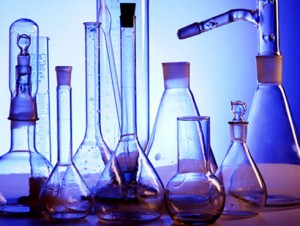

Oldat
A többkomponensű, homogén, vagy inhomogén rendszereket összefoglaló néven elegyeknek nevezzük.
Az oldat elnevezést ezen belül azokra a rendszerekre használjuk, amelyekben egyik komponens – az oldószer – koncentrációja a többiéhez – oldott anyagok – képest viszonylag nagy. A komponens a rendszert alkotó, kémiailag egységes részecskéinek halmaza. Megkülönböztetünk egy-, két- és többkomponensű rendszereket.
Gyakori oldószerek például a víz, benzin, alkohol stb. Oldott anyag lehet például a só, cukor, oxigén, alkohol stb.
Az oldatok telítettsége
Az oldatokat telítettség szempontjából több csoportba sorolhatjuk:
- híg oldat: ha az oldott anyag részarányát minden határon túl csökkentjük, akkor a híg oldat fogalmához jutunk. A híg oldatok törvényszerűségei nem az oldott anyagtól, hanem az oldószertől függenek.
- telítetlen oldat: ha az oldott komponens koncentrációja kisebb, mint az adott körülményekhez (oldószer, hőmérséklet, nyomás) tartozó oldhatósága (az oldandó anyagból még több is oldódhat).
- telített oldat: ha az oldott komponens koncentrációja megegyezik az adott körülményekhez (oldószer, hőmérséklet, nyomás) tartozó oldhatóságával (a feleslegben hozzáadott anyag oldatlanul visszamarad).
- túltelített az oldat, ha az oldott komponens koncentrációja nagyobb, mint az adott körülményekhez (oldószer, hőmérséklet, nyomás) tartozó oldhatósága. Ilyen rendszer akkor jön létre, ha adott hőmérsékleten egy telített oldat elkezd hűlni és benne a kristálygóc-képződés különféle gátlások miatt nem indul meg.
Az oldat töménysége
Az oldatok töménységét nemcsak jelzőkkel fejezhetjük ki, hanem számadatokkal is. Erre szolgál az egyik legegyszerűbb kifejezési mód, a tömegszázalék (m/m %). A tömegszázalék megmutatja, hogy az oldott anyag tömege hány százaléka az egész oldat tömegének.
m/m % = ( moa / ( mosz + moa ) ) * 100, ahol
moa = oldott anyag tömege;
mosz = oldószer tömege
Feladat
Hány tömegszázalékos az az oldat, amelyben g sót feloldunk g vízben?
Eredmény: ? m/m%